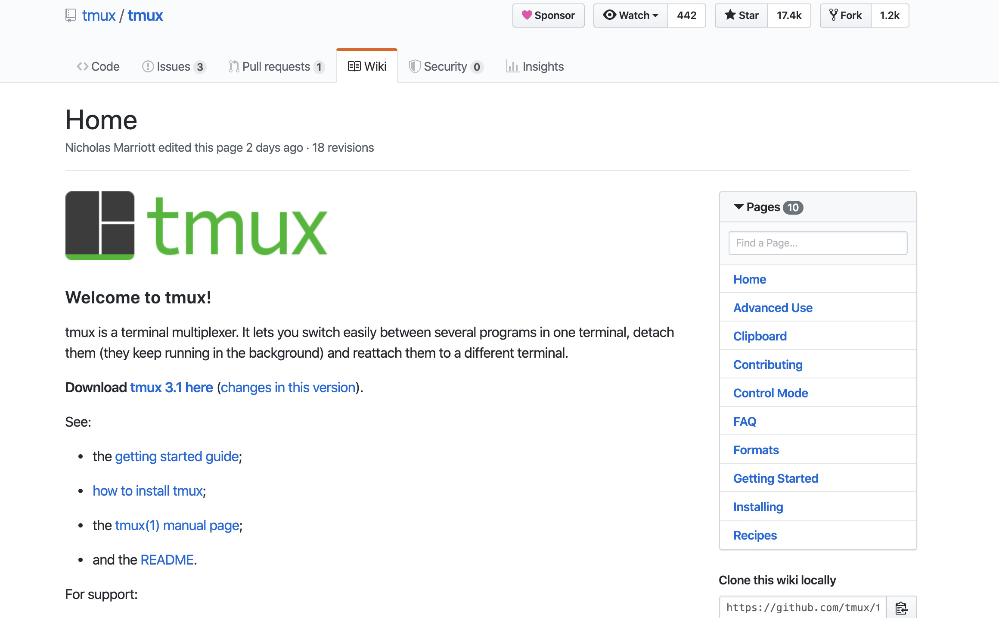
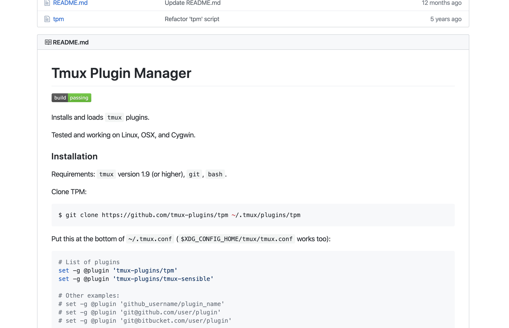

ターミナル（黒い画面）を分割して使う tmux 超入門
| lastmod:
この記事は書かれてから1年以上が経過しており、最新の情報とは異なる可能性があります
tmux に関する記事はちょくちょく書くものの、 tmux 導入そのものに関する記事はそういえば書いてなかったなーと。
というのも、ちょうど直近で tmux を含む環境構築をする機会があって、 「あーついでにチートシート用意してもいいなあ」と思って、手元にメモ残してたのでした。
tmux のこれだけ読めば使える記事が手元に1つあってもいいかなって思ったので雑に書きます。
ターミナルでやるタスクは多い、分割したい
ターミナル（黒い画面）使ってますか？僕はたくさん使ってます。
こんな感じで 分割して 使ってます！（最近さくっと動画キャプチャの術を憶えたので！）
ターミナルが行えるタスクというのはそれなりに多いと思いますが、 ターミナルのつらいところってどの辺にあるでしょうか？
- 毎回別のウィンドウを立ち上げるのつらい
- 実行が終わるのを待つのがもったいない！
- なんかログが流れて行っちゃったけど、エラーのところコピペしてググりたかった・・・
いずれもあるあるです。
だったらターミナルを分割しよう！
上を見ると一目瞭然なんですが、 ターミナルを分割すると、 毎回別のウィンドウを立ち上げなくてすむ し、 何か実行してる最中に 並行して別のコマンドを打って作業する こともできちゃいます。
まだターミナルを複数立ち上げちゃってる人は、 これを機会に設定しちゃいましょう！
tmux とは何なのか、どういう位置付けなのか
まずターミナルを分割してくれるツールのことを、 ターミナル・マルチプレクサ (Terminal multiplexer) といいます。
どんな種類があるかというと・・・
- screen (or GNU screen)
- Byobu
- tmux
この辺にずらずら紹介されてますね！
https://en.wikipedia.org/wiki/Terminal_multiplexer
今回は最後の tmux （ティーマックス） を導入していきます！
tmux でできること

https://github.com/tmux/tmux/wiki
（公式はここなのかな・・・？）
tmux でできること一覧です！
- 視覚的な分割（全体の ウィンドウ に対して分割したものを ペイン という）
- 複数のウィンドウ切り替え（複数のウィンドウをまとめて セッション と呼ぶ）
- 複数セッションの管理
- ペイン間、ウィンドウ間、セッション間の移動
実際は tmux に限らず、大抵のターミナル・マルチプレクサでできることですね。
まだまだたくさんできることはありますが、 今回はペインとウィンドウだけが自由に作れる状態を作るまでがゴールとします。
tmux を最短で導入、設定したい！
最短でペインとウィンドウが使えるようになるためには、 前半で導入・設定 し、 後半で使い方を覚える 必要があります。
まず前半です。 以下の手順です。（Mac 想定）
- 事前に好きなターミナルを用意する
- tmux をインストール
- ホームディレクトリに空の
.tmux.confを作る - Tmux Plugin Manager (tpm) をインストール
- tmux の設定を
.tmux.confに書く - 手動で
tmuxが立ち上がるか確認 - 最低限の起動設定を
.zshrcor.bashrcあたりに書く - ターミナル再起動し、自動で立ち上がるか確認
1. 事前に好きなターミナルを用意する
最初から入ってるやつでも大丈夫ですが、 僕は iTerm2 ( https://www.iterm2.com/ ) を使っています。
やってる設定は透明度、ウィンドウサイズ、フォントあたり？の最低限です。
2. tmux をインストール
Homebrew に入ってる時代になりました。素敵。
$ brew install tmux
3. ホームディレクトリに空の .tmux.conf を作る
$ cd ~
$ touch .tmux.conf
ls -a でドットファイル含めたファイルの一覧が確認できるので、
それで確認できたらオーケーですね。
4. Tmux Plugin Manager (tpm) をインストール
実は Tmux 、途中から プラグイン機構の考え方が導入 されて、 今ではプラグインベースでみんながよく使う設定などが提供されてたりするのでした。
なので、自分でガリガリ設定書く前に、プラグインマネージャを優先して入れましょう。

導入手順はここに書いてあります！
https://github.com/tmux-plugins/tpm
ちなみに勘違いが起きやすいところなのですが、 tmux 自体にプラグイン機構があるわけではなく、 tpm を追加で導入することでプラグイン機構が使える ようになります。
つまり、 tpm のプラグインが入っていない状態でプラグインを導入することはできない ので、 tpm だけは手作業で入れましょうw
書いてあるように ~/.tmux/plugins/tpm に tpm を入れましょう。
そうすれば、それ以外のプラグインが ~/.tmux/plugins/ 以下に勝手に入ってくれます。
5. tmux の設定を .tmux.conf に書く
設定項目は以下あたりかなと。
- basic 基本的な設定
- prefix キーの設定（変更したい場合のみ）
- ウィンドウの切り替えをしやすくするための設定
- mapping キーマッピング
.tmux.confを書き換えたときの再読み込み
- plugins プラグイン読み込み
- プラグイン一式を読み込む
以下日本語でコメント付きで書いていきます。
（前提）キーバインドについて
先に書き方を統一しておきます。
Ctrl-j…Ctrlキーとjキーの同時押し<prefix> + r… prefix キーを押してから、（一度離して）rキーを押す
つまり、 <prefix> + r と書いてあったとき、 prefix キーが Ctrl-j だった場合、
Ctrl キーと j キーを同時押ししてから、 r キーを押すことを指します。
basic 基本的な設定
.tmux.conf に丸々コピペしても一応動きます。
# ---------------------------------------------------------------------------- #
# basic
# ---------------------------------------------------------------------------- #
# prefix キーを Ctrl-b から Ctrl-j に変える
# Ctrl-b は他（vi キーバインド）とかぶるので、かぶらないものに変えた方が良さげ
# Ctrl-j なら影響少なそう、押しやすそう
set-option -g prefix C-j
unbind-key C-b
# いろんなところで vi キーバインドが使えます
# vi に馴染みがない人は外した方が良さげ
# でもこれを機会にペイン移動だけでも hjkl 使ったらいいと思う！
set-window-option -g mode-keys vi
set-option -g @shell_mode 'vi'
# キーボード側が左から 1,2... と並んでいるので、
# キーボード位置に合わせてウィンドウに1から番号振ると分かりやすい
# でないと 0 だけ右、次の1は左、みたいにややこしい
set-option -g base-index 1
set-option -g pane-base-index 1
mapping キーマッピング
# ---------------------------------------------------------------------------- #
# mapping
# ---------------------------------------------------------------------------- #
# <prefix> + r で勝手に .tmux.conf を読み込んでくれる
# これだけはあった方が良いぞ！
# from http://d.hatena.ne.jp/kiririmode/20120321/p1
bind-key r source-file ~/.tmux.conf\; display-message "$HOME/.tmux.conf reloaded!"
# tmux-yank でコピーの選択開始が動かなくなってた？みたいなので、
# 手動で bind-key の設定しちゃう（後述）
bind-key -T copy-mode-vi 'v' send-keys -X begin-selection
plugins プラグイン読み込み
ちょっと多めです。
上にも書きましたが、 tpm だけは手動で入れなきゃ動かないです。 tpm プラグインが入っていない状態でプラグインを導入することはできない ですw
# ---------------------------------------------------------------------------- #
# plugins
# ---------------------------------------------------------------------------- #
# プラグインを管理するためのプラグイン
# 手動で読み込む必要あり！
# <prefix> + i で指定されているプラグインをインストール
# <prefix> + u でアップデート
set-option -g @plugin "tmux-plugins/tpm"
# セッションを保持してくれるプラグイン
# https://github.com/tmux-plugins/tmux-resurrect
# <prefix> + Ctrl-s でセッション保存
# <prefix> + Ctrl-r で復元（リストア）
set-option -g @plugin "tmux-plugins/tmux-resurrect"
# さらに勝手にセッション保持してくれるプラグイン
# https://github.com/tmux-plugins/tmux-continuum
# @continuum-save-interval を指定することで、保持する間隔を指定できる
set-option -g @plugin "tmux-plugins/tmux-continuum"
set -g @continuum-save-interval 10
# ファイルツリーが見られるやつ
# https://github.com/tmux-plugins/tmux-sidebar
# <prefix> + <Tab> で表示
# もう一度 <prefix> + <Tab> を押すか、そのペインに移動してから q で閉じる
set-option -g @plugin "tmux-plugins/tmux-sidebar"
# vi のキーバインドでペイン移動できちゃうやつ
# https://github.com/tmux-plugins/tmux-pain-control
# 結局 tmux のペイン移動を覚える必要があるので、 vi に合わせておくと脳のコスト下がる
set-option -g @plugin "tmux-plugins/tmux-pain-control"
# 黒い画面からのコピペ
# https://github.com/tmux-plugins/tmux-yank
# <prefix> + y で画面まるまるヤンク（コピー）できる
# 実際は画面全体じゃなく部分的にコピーすることが大半なので、
# <prefix> + [ でコピーモードに切り替えてから、 v を押して選択し y でコピー
set-option -g @plugin 'tmux-plugins/tmux-yank'
# プラグイン実行
run-shell "~/.tmux/plugins/tpm/tpm"
いやー、この辺全部設定を .tmux.conf に書いていた時代と比べたら、
だいぶ楽になりましたねー。
少し抜粋しましたが、全文はこちらです。
https://github.com/girigiribauer/dotfiles/blob/master/.tmux.conf
カラー指定とかステータスラインとかはまあ無くても動きますし、 上記参考にしながら、入れたい人だけカスタマイズしたらいいんじゃないでしょうか。 ちなみに僕は黄色と黒の TwentyFour カラーです。（どうでもいい）
6. 手動で tmux が立ち上がるか確認
tmux は勝手に立ち上がりません。
ターミナルを立ち上げたあと、以下を実行してみます。
$ tmux new -s works
こうすると、セッション名が works の tmux のセッションが立ち上がります。
立ち上がったところだけ確認して、 Ctrl-d あたりで一旦閉じておきます。
（ちなみに Ctrl-d はただの exit コマンドです。 exit って入力しても同じです。）
7. 最低限の起動設定を .zshrc or .bashrc あたりに書く
最初にも触れたように、複数セッションを使いこなすことは当初想定してません。
なので、セッション名は works と固定にしたうえで、
それが 常に毎回自動で立ち上がるための設定 をします。
# セッションなかったら作る
if ! $(tmux has-session -t works 2> /dev/null)
then
tmux new -s works
fi
# tmux からの起動じゃなかったら tmux attach
if [ -z "$TMUX" ]
then
tmux attach -t works
fi
tmux から立ち上がると、環境変数に $TMUX というのが追加されているので、
それをもって tmux から立ち上げた起動したのか、外から立ち上げたのかを判断します。
8. ターミナル再起動し、自動で立ち上がるか確認
あとはターミナルを一旦すべて閉じて、改めて立ち上げ直してみてください。
tmux が自動で立ち上がっていたら、前半の設定完了です！
導入の最後に、プラグインを一式入れておくと良いです。 <prefix> + i です！
tmux 使い方チートシート
前半で導入・設定 し、 後半で使い方を覚える 必要があります。 と書きましたが、まだ前半が終わっただけで、今からが後半です。
ここを頑張って使いながら手に馴染ませていくのです・・・！
ウィンドウ / ペイン操作
この範囲のキーバインドを憶えさえすれば、 ウィンドウ、ペインに関する最低限の操作はばっちり！
新たにウィンドウを作る
<prefix> + c
Create の c って覚える！
ペイン左右分割
<prefix> + %
とにかくペイン分割したい！って思ったら、
見た目が分割してそうな % を押す！
ペイン上下分割
<prefix> + "
さらに上下分割したかったら、ダブルっぽいキーである " を押す！
ペイン上下左右移動
vi キーバインドの hjkl に合わせるの、超おすすめです！
すでに上で設定がされているなら・・・
<prefix> + k // 上移動
<prefix> + l // 右移動
<prefix> + j // 下移動
<prefix> + h // 左移動
サイズ変更
今いるペインが基準になります。先に移動しておいてください。
<prefix> + KKK... // 上に広げる
<prefix> + LLL... // 右に広げる
<prefix> + JJJ... // 下に広げる
<prefix> + HHH... // 左に広げる
ちなみに KKK... というのは、 Shift と k を同時押ししながら k を連打するのを指してます。
広げたい分だけ広げてください。
どのペインにいるか分からない
<prefix> + q
たまにあります。
どこにフォーカス当たってるのか分からなくなったときは Question の q で！
ペインを閉じる
Ctrl-d
これは普通に閉じればオーケーです。
ウィンドウの切り替え
<prefix> + [number]
上で設定がされているのなら、1から順にウィンドウが増えているはずです！
その他お役立ち操作
.tmux.conf の設定反映
<prefix> + r
上で設定したやつです！ .tmux.conf を Reload してくれるので r で！
プラグイン管理
<prefix> + i // インストール
<prefix> + u // アップデート
それぞれ Install の i 、 Update の u です！
画面からのコピー
ここが一番憶えにくいかもです・・・！
ただ、ターミナル画面で出力されたエラーを、 ブラウザ上にコピペしてググったりとか、 結構な頻度でターミナルからのコピーは発生する ので、 使いながら徐々に憶えた方が良さげです。
- コピーモードに切り替え
- 選択したい箇所が移るように移動
- 選択開始
- 選択終了してコピー！
<prefix> + [ // コピーモード
Ctrl-b // 画面表示をさかのぼる
Ctrl-f // 逆に進める
q // コピーモードの終了
<prefix> + [ でコピーモードに移行して、 q で終了します。
これだけでも、一瞬ウィンドウに表示されてたけど、 あれなんだったんだろう・・・？って見にいくのに使えますね！
さらに、コピーモード中に Ctrl-b や Ctrl-f で Back したり Forward したりできます。
もちろん Back / Forward の b / f ですね！
さらにここからコピーの流れです。
// コピーモード中に・・・
v // 今のカーソル位置から選択開始
hjkl // hjkl で移動
y // コピー！
ここから追記（2020/05/05）
アップデート前後でなぜか v キーにてコピーの選択開始が動かなくなってたので、
独自に bind-key 設定して追加してます！
上の mapping あたりの設定にも出てきてますが、改めてメモ。
bind-key -T copy-mode-vi 'v' send-keys -X begin-selection
ここまで追記（2020/05/05）
ちょっとここだけ分かりづらいので、またまた動画で。
もうお分かりだと思いますが、選択中は概ね vi のキーバインドが使えるので、
0 で行頭、 $ で行末に行けちゃったりします。
つまり行ごとコピーも簡単です。
（そもそも行コピーは v で開始じゃなく V と入力すると、
これも vi と同じく行単位のコピーになります）
セッション操作
ウィンドウ、ペインよりは優先度下がりますが、 一応書き残しておきます。
セッション1つで構わないよって人は全部スルーして OK ！
セッション一覧を見る（コマンド）
これは tmux 立ち上がってないときでも使えます。 普通にコマンドとして入力します。
tmux ls
セッション一覧を見る（キーバインド）
こっちは立ち上がっているときの話です。
<prefix> + :ls
tmux 起動中に別のセッションを作る
<prefix> + :new -s works2
作ったら自動的にセッション切り替わります。
tmux 起動中に別のセッションに切り替える
<prefix> + :attach -t works
オプションの -s と -t が若干分かりづらいのですが、
新規で作るときのセッション名は Session の s 、
既存のセッションは Target の t と覚えると良いのかも？です。
（そもそも揃えて欲しい感はありますが・・・）
セッションを閉じる
tmux kill-session -t works2
自分自身のセッションを指定すると tmux が終了するので注意が必要です。
中々キーバインドが憶えられない・・・
使って覚えろ！手に馴染ませろ！
まとめ
これで 最低限の tmux の導入 ができたんじゃないでしょうか！
こういった仮想のターミナルをいくつも手元で管理できるようになると、 人類がマルチタスクにまた一歩近づけると思います。
何かの作業中に割り込みタスクが入った場合、 今のものを閉じるのではなく、別のウィンドウを立ち上げる、 あるいは別のセッションを立ち上げるなどすれば、 割り込みタスクを片付けたあとに、元々のタスクに戻るのもスムーズ です！
知らなくても作業自体には差し支えがないため、 意外と知らない人も多いようです。 「えっもっと早く教えてくれたら良かったのにー」って人を何度も見かけてきてますので、 良かったら周りの人にも、「こういう黒い画面を分割できるやつがあるよ！」って記事ごと教えてあげてください！ （そのために書きました）
参考 URL
| lastmod:
この記事は書かれてから1年以上が経過しており、最新の情報とは異なる可能性があります